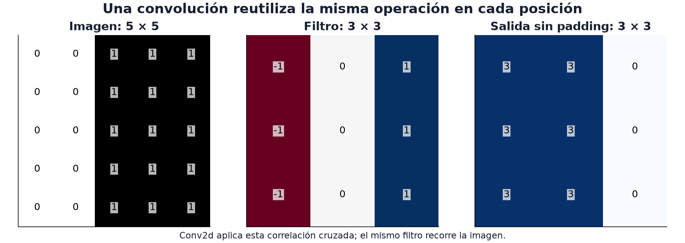

16 · Visión I
Nivel 3 — Las modalidades · Ruta de Aprendizaje
¿Cómo reconocer el mismo borde cuando aparece en otra parte de la imagen? Una capa densa podría aprender por separado cada posición. Una convolución reutiliza una misma operación en todas ellas: esa decisión reduce parámetros y expresa una hipótesis sobre las imágenes.
En el módulo 12 convertiste ejemplos en vectores. Aquí abrimos un encoder de imágenes para ver cómo construye esos vectores y qué información pierde al hacerlo. El Syllabus IOAI marca las capas convolucionales como teoría y práctica 🧠💻; los demás temas de visión aparecen como práctica 💻. Esa distinción indica el tipo de evaluación, no que se puedan usar sin comprenderlos.
En el cuaderno 08 · Visión de Laboratorios guiados puedes ver qué reconstruye un encoder y comparar sus representaciones con pocas etiquetas.

El filtro resta la columna izquierda de la derecha en cada parche: en la
primera posición suma tres veces 1 − 0 y devuelve 3. En un parche uniforme,
las contribuciones se cancelan y devuelve 0. Guíate por los números: la
paleta de la figura pinta el 1 oscuro. Este filtro fue elegido para mostrar un
borde; durante el entrenamiento, la red aprende los pesos. La operación dibujada
es la correlación cruzada que Conv2d llama convolución.
La convolución, y por qué existe
Para una imagen de 32×32×3 y una salida de 32×32×16, una capa densa necesitaría más de 50 millones de parámetros. Una convolución 3×3 con esa misma forma de salida necesita 448. No tienen la misma capacidad: la capa densa conecta cualquier entrada con cualquier salida; la convolución restringe y comparte conexiones. Esa restricción puede ser una ventaja cuando los datos son escasos.
import torch
import torch.nn as nn
capa = nn.Conv2d(in_channels=3, out_channels=16, kernel_size=3, padding=1)
print(sum(p.numel() for p in capa.parameters())) # 448 = 3 * 16 * 9 + 16
print(capa(torch.randn(2, 3, 32, 32)).shape) # torch.Size([2, 16, 32, 32])De dónde salen los 448: 3 canales de entrada × 16 de salida × 9 pesos del
filtro 3×3, más 16 sesgos. La cuenta importa porque explica las dos ideas que
hacen funcionar a las CNN:
- Localidad: en esta capa, cada salida depende de un vecindario de 3×3. Eso no afirma que los objetos lejanos sean independientes: apilar capas amplía el contexto, y una decisión puede necesitar toda la escena.
- Pesos compartidos: el mismo filtro busca el mismo patrón en todas las posiciones. Un borde puede importar tanto arriba como abajo. Es una hipótesis útil, aunque tareas como leer un reloj también necesitan posición.
El tamaño de salida: contar dónde cabe el filtro
El kernel es el tamaño del filtro; el padding agrega un borde alrededor de la entrada; el stride indica cuántas posiciones avanza. Sin dilatación y con padding simétrico, la cuenta en cada eje es:
salida = floor((entrada + 2·padding − kernel) / stride) + 1
floor redondea hacia abajo: una ventana que no cabe completa no aporta otra
posición. La misma cuenta se aplica por separado al alto y al ancho.
Definición de Conv2d.
def salida(n, k, p, s):
return (n + 2 * p - k) // s + 1
print(salida(32, 3, 1, 1)) # 32 -> "same": el padding compensa el kernel
print(salida(32, 5, 0, 2)) # 14 -> stride 2 reduce a la mitad (menos el borde)Con kernel 3, padding 1 y stride 1 se conserva el tamaño. Stride 2 lo reduce aproximadamente a la mitad; el borde y el redondeo explican por qué el segundo caso da 14, no 16. Estas cuentas conectan con el módulo 15: duplicar ambos ejes cuadruplica los valores de una activación, aunque la memoria total también incluye parámetros, gradientes y estado del optimizador.
Pooling y campo receptivo
MaxPool2d(2) conserva el máximo de cada ventana 2×2 y avanza dos posiciones.
Por ejemplo, [[1, 3], [2, 0]] se convierte en 3; el promedio sería 1.5.
Ambos resumen, pero responden preguntas distintas: «¿apareció una respuesta
fuerte?» frente a «¿cuánta respuesta hay en promedio?». No tienen pesos aprendidos;
con tamaños impares, el redondeo importa.
El campo receptivo es la región de la entrada que puede influir en una activación. Tres convoluciones 3×3, con stride 1 y sin dilatación ni pooling, ven regiones de lado 3, 5 y 7 sucesivamente. Apilar capas combina patrones locales en otros más amplios e intercala no linealidades. El ahorro de parámetros frente a un único filtro grande depende también de los canales intermedios.
La arquitectura mínima, para entenderla
red = nn.Sequential(
nn.Conv2d(3, 32, 3, padding=1), nn.BatchNorm2d(32), nn.ReLU(),
nn.MaxPool2d(2), # 32x32 -> 16x16
nn.Conv2d(32, 64, 3, padding=1), nn.BatchNorm2d(64), nn.ReLU(),
nn.MaxPool2d(2), # 16x16 -> 8x8
nn.AdaptiveAvgPool2d(1), # 8x8 -> 1x1
nn.Flatten(),
nn.Linear(64, 10), # logits, sin softmax
)En este ejemplo, el patrón es conv → norm → activación → reducir: crecen
los canales mientras baja la resolución. Para un lote de imágenes 32×32,
la salida tiene forma (B, 10). Sus diez logits son puntajes de clase sin
normalizar: cross_entropy recibe esos puntajes directamente. softmax los
convierte en probabilidades que suman uno, pero eso no garantiza calibración.
AdaptiveAvgPool2d(1) promedia cada canal y deja un vector de 64 componentes.
Acepta mapas de distintos tamaños, siempre que las capas anteriores produzcan
mapas válidos. Resume qué se activó y pierde buena parte de dónde ocurrió:
intercambiar dos posiciones no cambia su promedio. Esa pérdida de localización
explica por qué la siguiente clase necesita otras salidas.
Reutilizar un encoder preentrenado
Un encoder preentrenado aporta filtros aprendidos con otros datos. Puede ahorrar etiquetas y entrenamiento, pero su utilidad depende de la cercanía entre esos datos y tu problema. Entrenar una red pequeña desde cero sigue siendo una opción cuando el dominio, los permisos o el costo lo favorecen.
Este fragmento prepara una cabeza nueva; requiere torchvision, los pesos
accesibles y n_clases definido. Todavía faltan datos, pérdida y entrenamiento.
import torchvision
modelo = torchvision.models.resnet18(weights="IMAGENET1K_V1")
modelo.fc = nn.Linear(modelo.fc.in_features, n_clases) # cambiar la cabezaLa cabeza original de 1000 clases se reemplaza por otra inicializada al azar. Eso no congela el resto del modelo. Las opciones del módulo 14 responden a cuánto quieres adaptar y puedes entrenar; no son etapas obligatorias:
- Congelar el backbone y mantener
fcentrenable; otra opción es sacar los vectores una vez y usar boosting encima (módulo 12). - Descongelar las últimas capas con Congelar capas.
- Afinar todo con learning rate bajo.
- Usar adaptadores como LoRA si la arquitectura y la implementación lo permiten.
En la IOAI los modelos permitidos están listados en el enunciado.
Double Agent Dilemma (2026) admitía exactamente dos:
torchvision.models.resnet18 y timm’s vit_tiny_patch16_224.
El preprocesamiento es parte del modelo
Los pesos vienen asociados a una preparación de entrada: canales, rango, normalización y una transformación recomendada para inferencia. El entrenamiento puede haber usado recortes aleatorios; reproducirlo no significa aplicar esos mismos recortes al evaluar.
from torchvision import transforms
preproceso = transforms.Compose([
transforms.Resize(256),
transforms.CenterCrop(224),
transforms.ToTensor(),
transforms.Normalize(mean=[0.485, 0.456, 0.406],
std=[0.229, 0.224, 0.225]),
])Esos valores corresponden a esta preparación ImageNet, no a todos los modelos
de torchvision. Consulta el preprocesamiento de los pesos concretos:
torchvision.models.ResNet18_Weights.IMAGENET1K_V1.transforms() lo proporciona
para este ResNet. Los detectores tienen otro contrato y pueden normalizar dentro
del modelo; aplicar una normalización extra cambia su entrada.
Documentación de pesos y transformaciones.
Y esto fue literalmente parte de un enunciado: Double Agent Dilemma fijaba
el pipeline (Resize(256) → CenterCrop(224) → Normalize(...)) y exigía que la
perturbación se sumara a la imagen cruda, en su resolución original, antes de
ese pipeline. Aplicarla después de normalizar cambia tanto las unidades como la perturbación evaluada.
Augmentation: decidir qué cambios deberían ser irrelevantes
Los aumentos muestran variantes de los ejemplos de entrenamiento. No crean observaciones independientes: expresan invariancias que queremos que el modelo aprenda. Si esas invariancias son falsas, pueden empeorar el resultado.
aumento = transforms.Compose([
transforms.RandomResizedCrop(224, scale=(0.7, 1.0)),
transforms.RandomHorizontalFlip(),
transforms.ColorJitter(brightness=0.2, contrast=0.2),
transforms.ToTensor(),
transforms.Normalize(mean=[0.485, 0.456, 0.406],
std=[0.229, 0.224, 0.225]),
])Voltear un gato horizontalmente suele conservar «gato». Voltear un dígito puede cambiarlo o producir algo que ya no pertenece a la distribución real. Incluso un recorte de gato puede eliminar al gato: importa la transformación concreta, no solo su nombre.
Separa los ejemplos originales antes de aumentarlos: variantes de la misma imagen en train y validación producirían fuga. Para comparar modelos, mantén estable la evaluación. También existe test-time augmentation: combinar predicciones de varias vistas, si está permitido, con costo adicional. En una salida espacial hay que invertir las transformaciones antes de combinarlas.
⚠️ Las tres trampas
1. Normalizar dos veces o con estadísticas equivocadas. El pipeline forma parte de los pesos; el detector del módulo 17, por ejemplo, normaliza dentro.
2. Cambiar al azar la validación entre experimentos. Mezcla el efecto del modelo con el de las vistas. Una evaluación con varias vistas también necesita una regla estable de agregación.
3. Redimensionar sin mirar la métrica. Si la tarea evalúa algo espacial —una máscara, un conteo, una perturbación— redimensionar cambia el objeto que se evalúa. En Double Agent Dilemma la salida tenía que estar en la resolución original de cada imagen, no en 224×224.
Visión autosupervisada: aprender antes de tener etiquetas
En aprendizaje autosupervisado la supervisión se construye a partir de los datos. Por ejemplo, dos aumentos que preservan el objeto de una imagen deberían producir representaciones compatibles; otras formulaciones reconstruyen parches ocultos. No significa «no hay objetivo ni pérdida», ni equivale a usar etiquetas ocultas.
El objetivo necesita evitar soluciones vacías. Si todas las imágenes producen el mismo vector, la distancia entre dos vistas vale cero, pero no permite distinguir un gato de una gallina: es el colapso de la representación. Los métodos de contraste y otras familias autosupervisadas incorporan mecanismos para evitarlo; reconstruir parches plantea un objetivo diferente.
En el laboratorio 08 puedes observar reconstrucciones y después congelar el encoder para clasificar con pocas etiquetas. Comparar sus vectores antes y después del aprendizaje, con el mismo clasificador y separación de datos, ayuda a distinguir qué aportó la representación. Una reconstrucción bonita no demuestra por sí sola que haya aprendido la característica que necesitas.
Un encoder autosupervisado preentrenado también se usa como extractor congelado, si el contrato lo permite. Preparar pesos y transformaciones oficiales es un paso previo; un ejemplo con pesos aleatorios no demuestra calidad de preentrenamiento.
🏋️ Práctica
| # | Ejercicio | Fuente | Qué practica |
|---|---|---|---|
| 1 | ⭐ HuggingFace Computer Vision Course, capítulos 1-3 | huggingface.co/learn | convoluciones y representaciones visuales |
| 2 | MNIST: CNN desde cero vs. ResNet18 afinado | Kaggle | ver cuánto aporta el preentrenamiento |
| 3 | Calcula el tamaño de salida de cinco configuraciones a mano y verifícalo | — | la fórmula, interiorizada |
| 4 | ⭐ Restroom Icon Matching: ResNet congelado + coseno | repo oficial | el patrón del módulo 12 sobre imágenes |
| 5 | Agrega augmentation a tu solución del 2 y mide con y sin | — | cuánto vale de verdad |
| 6 | Convolución polaca: filtros desde cero | OlimpiadaAI III | problema real de olimpiada nacional |
En el ejercicio 3, busca también una configuración con tamaño impar: revela por qué «dividir por dos» no sustituye a contar ventanas.
🎯 Mini-desafío: adaptación didáctica de Chicken Counting
Esta práctica binaria no es la tarea oficial de densidad. Usa las 100 imágenes
de entrenamiento y sus conteos, obtenidos sumando los mapas. Separa 80/20 por
imagen con semilla 16 antes de definir el problema. Fija N como la mediana de
conteos solo de train y etiqueta con conteo > N.
La pregunta es si los embeddings del extractor ayudan a separar imágenes con muchas y pocas gallinas. Una clase mayoritaria constante da una referencia; accuracy, balanced accuracy y algunos errores visibles cuentan partes distintas de la comparación. Si una clase desaparece del split, esa evaluación ya no permite comparar ambas clases.
Explora qué ocurre al mover N, manteniendo su elección dentro de train:
¿el error se concentra cerca del umbral o en imágenes visualmente difíciles?
Las estadísticas oficiales de Chicken Counting describen la tarea de densidad,
no esta adaptación binaria, y no sirven como metas de su score.
Para poner a prueba la intuición
Dibuja qué ve una neurona después de dos convoluciones. ¿Cómo cambia al introducir stride?
¿Qué aumento conserva la etiqueta de una imagen, pero destruye la de otra tarea?
Con pocas etiquetas, compara features crudas, aleatorias y autosupervisadas: ¿qué evidencia atribuirías al aprendizaje?
← 15 - Entrenar bajo presupuesto · Ruta de Aprendizaje · 17 - Visión II →